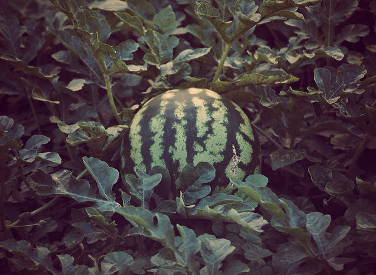
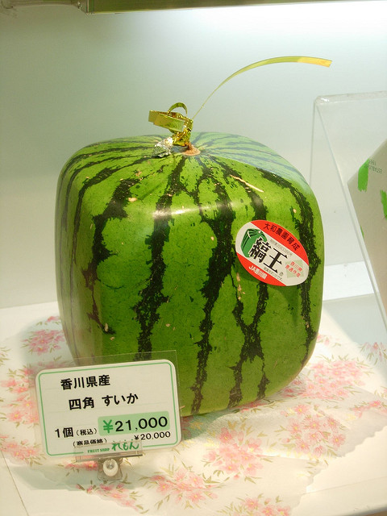

To many, the Watermelon is seen only as a commonplace fruit, but the watermelon actually has long and surprising history.
5000 years, that is right, the watermelon dates back more than 5000 years. The watermelon is not actually a fruit, but a desert berry. It is believed to originate from somewhere in Africa. Watermelons were originally hard, bitter or bland and not at all tasteful. It is believed that watermelons were grown because of their ability to not spoil and last months at a time. The watermelon was selectively bread to be less hard by the Egyptians. Over many years of breeding, watermelons became sweeter and more red in color.
The watermelon's history isn't entirely sweet. There are at least 2 separate instances where watermelons have lead to multiple deaths. One of these instances is the Watermelon War. This happed in 1856 in Panama City. Essentially this started because a "tourist" refused to pay for a 5¢ slice of watermelon ($1.40 today). This ended in 17 deaths, and 29 wounded along with Marines needing to be brought down by train. The other set of deaths were caused by a particular type of watermelon -- the Bradford Watermelon. During the American Revolutionary War, a military officer was captured by the British army. He ended up receiving a watermelon so sweet that he kept it and planted it in his home state of Georgia. Another individual crossbred this watermelon with another variety, making the Bradford watermelon. This watermelon was extremely sweet and could be cut with a butter knife. Farmers who were able to grow these watermelons had to guard them from thieves. Some would sit out in the fields with guns. Others poisoned some of their watermelons and posted signs warning thieves to "'pick at their own risk'". This later option lead to multiple farmers poisioning their families (including themselves) by confusing poisoned and un-poisoned melons.
NowIKnow MentalFloss in2013dollarsWatermelons, due to their round nature have a low packing efficiency. As such they take up a lot of unnecessary space in the refrigerator (or any other place where watermelons are stored). This is not a problem if you have excess space, but if you lack the space or just don't want your watermelon to roll, there are watermelon in a variety of shapes to suit your needs. The "traditional" odd shaped watermelon is the square (cube shaped) watermelon, but a watermelon can come in virtually any shape imaginable. These watermelons are made by inserting a watermelon into a rigid container, letting it grow, and removing it when it is ripe. Although a relatively simplistic process, some of the more complex shapes, like the heart, took years to create. I would guess it is because the watermelon gets ripe before it completely fills the mold. These watermelons are typically used as ornamental decoration, but supposedly taste better (even though they are otherwise identical to regular watermelons). Some of these melons have apparently been sold for more than $800.
